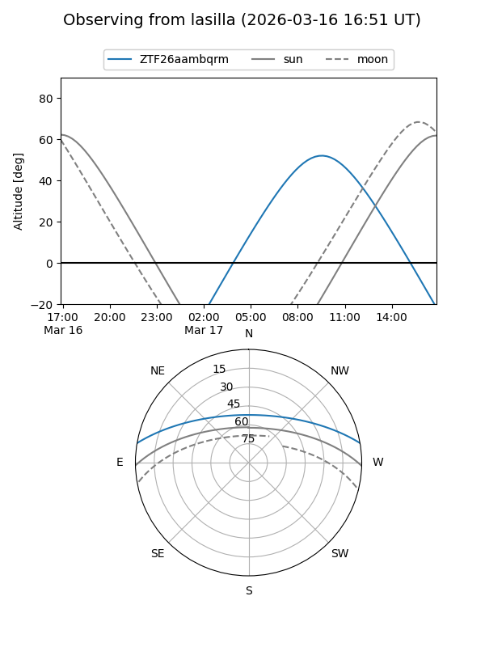
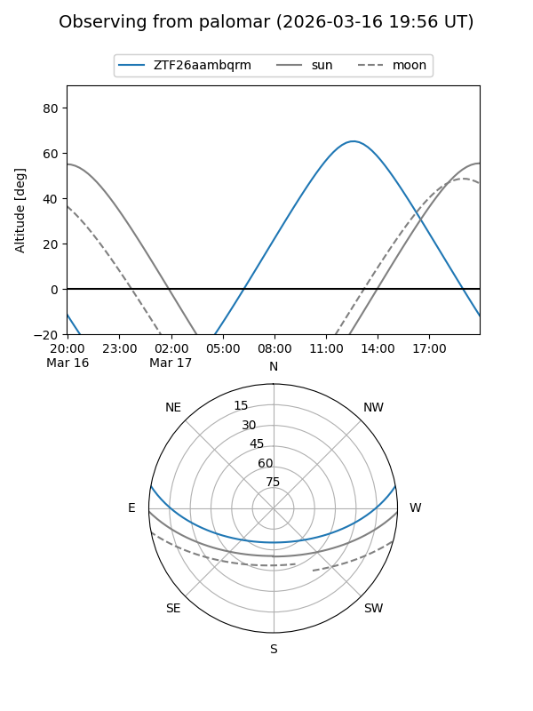

ZTF26aambqrm
Target ZTF26aambqrm at 2026-03-16 14:27
Aliases and brokers:
FINK: link
Lasair: link
ALeRCE: link
alt names
ZTF26aambqrm (ztf,fink_ztf)
Coordinates:
equatorial (ra, dec) = 246.8993,+8.70492
equatorial (HMS+DMS) = 16:27:35.84,+08:42:17.73
galactic (l, b) = (23.7043,+35.84623)
Flags:
Photometry:
last ztfg=17.27
1 ztfg detections
Lightcurve
Visibility


Additional plots